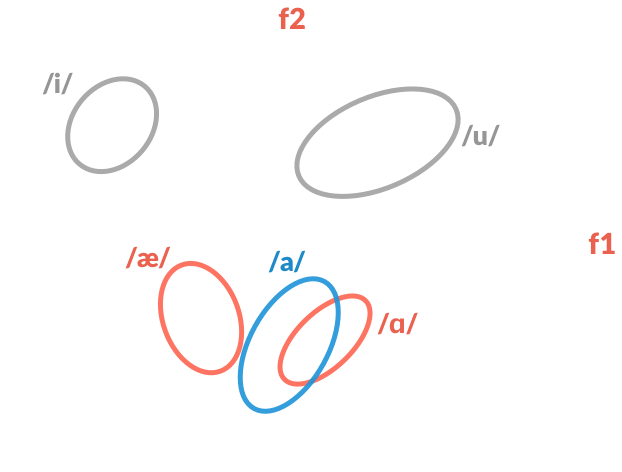

Senior Honors Thesis by Kira Prentice
Taco, jalapeño and cilantro?
El Paso, alpaca and cilantro?
Spanish vowel /a/ into English /æ/ and /ɑ/
What else conditions the nativization?
Nonce words that are orthographically and phonologically legal
in both English and Spanish
Using CMUDict, an online pronunciation dictionary
def context(token):
# Open file to read
words = open('./cmudict', 'r')
# Create output file
file_name = "./output/output_" + token + ".csv"
output = open(file_name, 'w')
# Allowed phones in output
filter_pre = ['T', 'K', 'B', 'S', 'P', 'D', 'F', 'CH', 'G'];
filter_post = ['T', 'K', 'B', 'S', 'P', 'D', 'F', 'CH', 'G', 'M', 'N'];
for line in words:
if token in line:
# Truncate to surrounding context
# Check if token is first or last in word
# Make sure surrounding context is included in the filter
output_string = s[0] + ', ,' + s[ndx] + ', ' + s[ndx+1] + '\n'
output.write(output_string)
output.close()
words.close()
This thesis is Open Source! Code available at github.com/kcp288/senior-thesis.
| Capu | Cami | Actu | Catu | Boto |
| Buto | Capi | Tano | Edri | Chipa |
| Pota | Gumo | Ocru | Canu | Poti |
| Bebu | Chebo | Samo | Taco | Pidi |
| Astu | Piga | Dani | Bica | Dano |
| Sanu | Pani | Baca | Coba | Casu |
| Bana | Sana | Ondo | Caso | Cama |
| Doba | Cota | Inti | Admo | Pati |
| Context | All | No Spanish | Spanish | |||
|---|---|---|---|---|---|---|
| /ɑ/ | /æ/ | /ɑ/ | /æ/ | /ɑ/ | /æ/ | |
| B_K | 0.95 | 0.05 | 0.92 | 0.08 | 1 | 0 |
| D_M | 0.91 | 0.09 | 0.92 | 0.08 | 0.89 | 0.11 |
| CH_T | 0.86 | 0.14 | 0.77 | 0.23 | 1 | 0 |
| K_S | 0.82 | 0.18 | 0.69 | 0.31 | 1 | 0 |
| T_M | 0.8 | 0.2 | 0.69 | 0.31 | 0.94 | 0.06 |
| . . . | ||||||
| K_N | 0.58 | 0.42 | 0.46 | 0.54 | 0.74 | 0.26 |
| _P | 0.55 | 0.45 | 0.42 | 0.58 | 0.72 | 0.28 |
| _D | 0.48 | 0.52 | 0.35 | 0.65 | 0.67 | 0.33 |
| _K | 0.47 | 0.53 | 0.23 | 0.77 | 0.82 | 0.18 |
| K_M | 0.35 | 0.65 | 0.24 | 0.76 | 0.5 | 0.5 |
Familiarity with a foreign language changes how we treat it in our native tongue
English and Spanish are increasingly in contact
Social and political factors
Anglicizing Spanish /a/: Implications of statistical distribution and
language experience on non-native pronunciation
Senior Honors Thesis by Kira Prentice
Find out more at github.com/kcp288/senior-thesis.